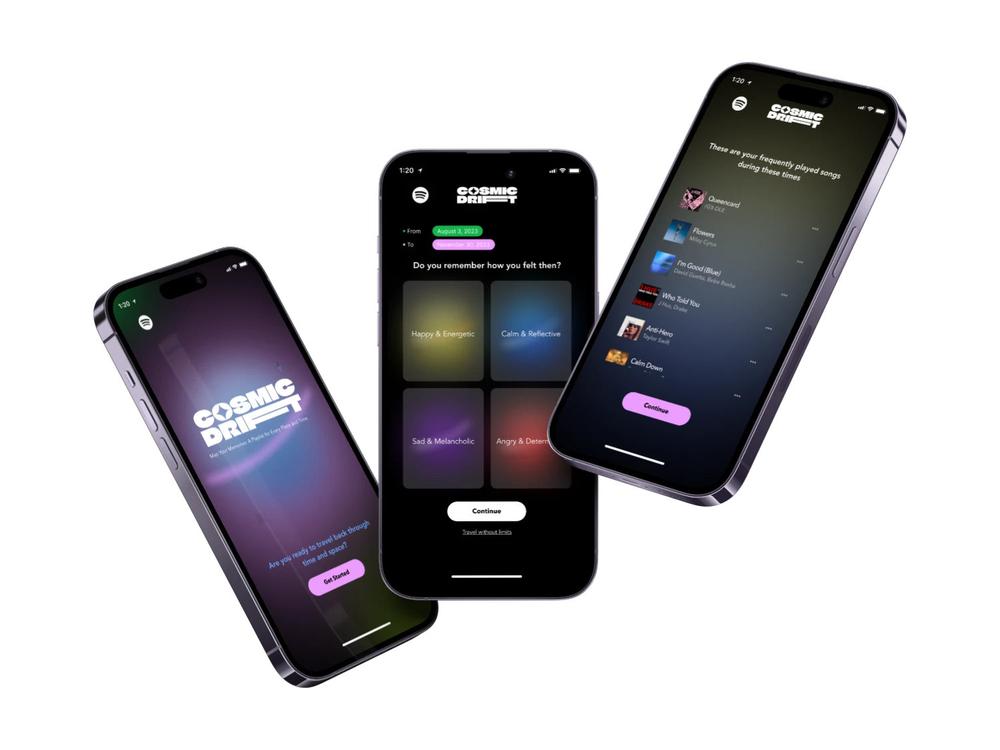
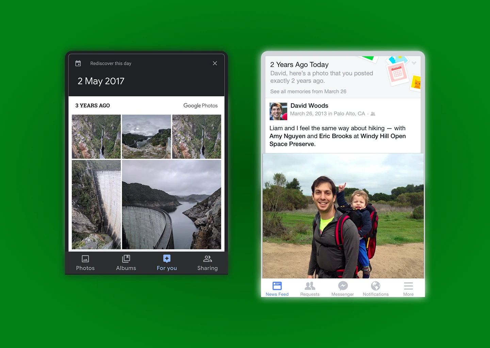

Cosmic Drift
Spotify users accumulate playlists that anchor songs to life moments — but have no way to revisit those memories by date or mood. Cosmic Drift is a mobile feature that turns a listening history into a navigable emotional archive.

Cosmic Drift is a concept feature for Spotify that lets users navigate their music history by time and mood rather than playlist name. It addresses a quiet gap in how streaming platforms handle personal memory — the music is there, but the context is locked.
The project spans user research, information architecture, and mobile UI design, grounded in the emotional relationship people have with songs tied to specific life moments.
Spotify users build playlists that tie songs to specific life moments — but the platform offers no mechanism to revisit those memories chronologically or by emotional state. The archive exists. The navigation doesn't.
There's no way to ask: "What was I listening to the summer before senior year?" or "Play something that felt like late November." The music is there. The context is locked.
Design a mobile feature that lets users rediscover emotional memories by navigating their music history through both time and mood — turning a listening archive into something you can actually feel your way through.
The case for this feature isn't speculative. The relationship between music, memory, and emotion is one of the most replicated findings in cognitive science — and product data shows users will engage deeply when you surface it.
of participants could recall a personal memory tied to a specific song — making music one of the most reliable autobiographical triggers we know of.
increase in positive emotions from nostalgia. APA research shows nostalgic recall actively improves mood and reduces feelings of stress and loneliness.
user engagement rate for time-based memory features within the first three months of launch — proving temporal navigation has immediate, sustained appeal.
increase in daily active users when memory features were surfaced prominently. Users don't just want nostalgia — they return for it.

A temporal range picker lets users scroll through their listening history by month. Selecting a window surfaces every song from that period — no search, no guessing.
Mood tags let users layer emotional context on top of their time window. The result is a curated set of songs that match both when and how — not just what was on shuffle.
Color-coded by mood — warm amber for upbeat, cool blue for calm — songs are presented one at a time. Swipe right to include, left to skip. No playlists, no manual sorting.
The final step lets users title their curated drift — capturing the emotional essence of a period in their own words. Named playlists become lasting anchors, not just saved queues.
Cosmic Drift started from a personal frustration: I had hundreds of songs tied to vivid memories, but no way to get back to them without manually hunting through playlists.
Designing this taught me that utility and emotion aren't in tension — the most useful thing you can build is the one that makes people feel something real.
The research didn't just validate the concept — it sharpened it. Grounding decisions in cognitive science made every design choice feel accountable, not arbitrary.
The next iteration would explore social drifts — shared memory spaces between friends, where the same song can surface completely different moments.
The features that stuck were the ones that felt true, not the ones that were technically clever. Emotional connection drives retention more than utility alone.
Starting from published findings — not assumptions — made the HMW statement sharper and the feature set more defensible. Data gave the design a spine.
Early prototypes assumed users knew their moods clearly. Testing showed mood is fuzzy and contextual — leading to the tag-based selector instead of sliders.
Designing for emotional states — not just task flows — required a different kind of scaffolding. The best UX here felt less like a tool and more like a conversation.
Sté is short for Steven — and it's a small wink at stay. It's the thread running through my work: design that invites people to stay engaged, art that holds attention, fragrances that linger long after the wearer leaves the room. Welcome. Sté with me a while.